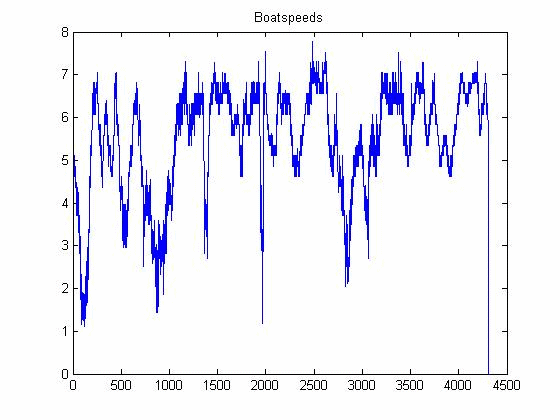

| DiscreteWavelets Toolbox |
Data file names
a = DataNames()
a = DataNames() returns the absolute paths of each data file included in the DiscreteWavelets Toolbox.
You can use DataNames to easily access data files included with the toolbox. It doesn't matter where you initially placed the DiscreteWavelets folder - as long as you did not rename it, DataNames will find its location and return absolute path names to the data files.
d=DataNames(); %Load all data files that come with the toolbox in cell array d
file = d{1} %Shows the name of the data file
produces (on my computer)
C:\DiscreteWaveletsText\DiscreteWaveletsMatlab\Data\boatspeeds.txtNow use standard Matlab commands to read and plot the contents of the file.
v=textread(file); %Read the contents of the file
plot(v); %Plot the vector v
title('Boatspeeds');

© 2007-2008 Patrick Van Fleet